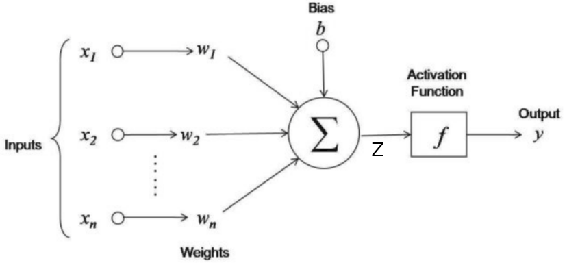

Artificial Intelligence often feels like magic — it can generate poetry, drive cars, detect diseases, and chat like a human. But once you start working in the field, a different truth becomes clear:
AI isn't magic. It's math, data, and a whole lot of patience.
In this article, I'll break down the reality behind the hype. Whether you're a beginner or just AI-curious, this piece will help you appreciate what actually goes into building intelligent systems.

Figure 1: A chart showing Data Analytics. Source: Medium
1. The Math Behind AI
At its core, AI is built on mathematics — especially linear algebra, calculus, statistics, and probability.
Examples of math in AI:
Linear algebra
Matrix operations that power neural networks.
Calculus
Optimization during training (e.g., gradient descent).
Probability
Decision-making and uncertainty (e.g., Naive Bayes).
Statistics
Understanding data distributions, outliers, and noise.
Most of the "magic" that AI models perform is the result of thousands of tiny math operations done very, very fast.
Figure 2: A neuron in terms of Math. Source: Medium
2. It Starts With Data
Even the best math in the world is useless without good data. In fact, 80% of an AI developer's time is spent on data, not algorithms.
What working with data looks like:
- Collecting and labeling large datasets
- Cleaning missing values, removing noise
- Understanding the context behind the numbers
- Balancing the dataset to avoid bias
Bad data leads to bad models. Even if your algorithm is perfect, it won't work well with incomplete, biased, or noisy data.
3. Then Comes the Tools and Models
Once the math and data are in place, the fun begins:
- Choosing a model (decision tree, CNN, transformer, etc.)
- Feeding the cleaned data into the model
- Training it using libraries like TensorFlow or PyTorch
- Tuning the parameters (hyperparameters) to get better results
This stage often involves a lot of:
- Waiting for training to finish
- Running tests
- Realizing the model didn't work
- Going back to tweak something and trying again
4. Patience Is the Real Superpower
The truth is: AI rarely works perfectly on the first try.
You might:
- Train a model that gives 52% accuracy
- Realize you forgot to normalize the data
- Run it again and wait 3 hours just to get a worse result
That's normal.
AI is an iterative process, not instant success. The most valuable skill I've gained isn't some fancy math trick — it's the grit to keep testing, debugging, and improving.
5. AI Isn't Magic — But It Is Powerful
Understanding that AI is not some sci-fi wizardry helps us:
- See the human effort behind smart systems
- Stay realistic about AI's limitations
- Build AI that's ethical, fair, and effective
Yes, AI can do incredible things. But it's not superhuman. It's just code built on solid math, trained with careful data, and refined through patience.
Conclusion
If you're getting into AI and feeling overwhelmed, remember this:
- You don't need to be a genius
- You do need to understand the fundamentals
- And above all, you need to be okay with trying, failing, and learning
AI isn't magic — but once you grasp what's under the hood, it might just feel like it.← Back to Portfolio